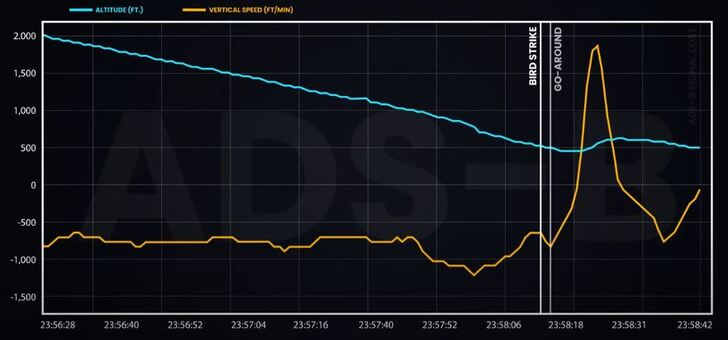

【工業】737Max必須重新認證
2019-04-08 04:46:00
原文网址：https://blog.udn.com/MengyuanWang/125380769
最近兩個月，煩心的事特別多，也就無暇照顧部落格。不過與政策直接有關的話題還是出現了兩次，我不願錯過對人類社會有貢獻的機會，仍然寫了文章來評論，都直接發表在《觀察者網》上。現在把更新過的版本也轉錄在此；這是第二篇。
==========================================
波音737Max上市發售不久，就一連出現兩次墜機事件，造成300多人死亡。目前已經有足夠的證據證明這兩次事故的主因都是“機動特性增强系統”（Maneuvering Characteristic Augmentation System，MCAS）的邏輯不合理，在單個迎角探測器測量有誤時，就專斷獨行，不論駕駛員如何處置，仍然堅持低頭向下紮。
這樣低級的錯誤，固然十分離譜，但是它的背後還是有一些複雜的歷史因素。737Max的起源在2010年十二月，那時空客宣佈了下一代A320Neo，采用LEAP發動機，從而大幅改善燃油效率，這立刻把波音逼入墻角。燃油是航空公司的主要花費之一，原本波音還在考慮開發一型全新的客機來取代737，但是A320Neo在2014年就要開始交貨，重新開發新機型顯然會讓空客獨霸單通道幹綫客機這個重要的利基很多年；一旦波音的傳統客戶跳槽，因爲駕駛員人機界面和維修系統的慣性，就會連帶把利潤更高的雙通道主綫客機生意也帶走，這將成爲徹徹底底的商業災難，於是波音不得不緊急啓動737Max的升級計劃，硬是在2017年就開始交貨，只比A320Neon晚了3年，而且還必須和空客一樣，不要求駕駛員做昂貴費時的新訓練。
爲了趕工，波音安排讓FAA（Federal Aviation Administration，聯邦航空管理局）將認證的工作交由自己代爲處理。這種官商水乳交融的“自我監管”（Self-regulation）是1980年代Reagan政權起就特別强調的政治原理，其目的是在不公開直接解除政府監管表象的前提下，仍然在實際上給予財團遠遠更大的自由，而其主要手段則是一方面鼓勵公務員與財團高管之間的旋轉門，另一方面是削減預算，使得即使有心辦事的官員也沒有人力財力來執行任務。這個趨勢，在共和黨執政期間特別明顯，經歷Reagan、小Bush和Trump三任挖墻脚的不懈努力，美國在20世紀前70年所建立的廉潔高效官僚體制早已名存實亡。
然而在技術上，737源自60年代的原始設計過於古老，其實無法與80年代設計的空客A320平等競爭，於是犧牲基本的安全性成了必然的結果。這其中最重要的技術問題有兩項：首先（第二項是飛控，見下文），737的機翼很低，但是過去50多年來，每一代新渦扇發動機都增高了涵道比（Bypass Ratio）以追求更大的推力和更高的燃油效率，所以也就越來越粗胖。從上一代的737NG開始，機翼下已經沒有足夠的空間來吊挂發動機，於是一方面要求發動機製造商强行削平下緣，另一方面將發動機艙（Engine Nacelle）向前上方挪移。737Max爲了使用更大的LEAP發動機，更是必須超越原始設計的安全極限，埋下了後來事故的伏筆。

上圖是737Max的LEAP發動機和上一代737NG的CFM-56安裝位置的對比，可以明顯看出LEAP不但更靠前上方，而且發動機艙也更大。其實爲了保證發動機艙下緣與地面有17英寸（43公分）的距離，波音已經要求LEAP的製造商（CFM）特別以燃油效率為代價，縮小發動機直徑，所以波音特供的LEAP-1B比A320和C919所用的版本都要小一圈。至於LEAP-1B的另一個特徵：後緣的三角形鋸齒，那是爲了打破紊流、減低噪音的設計，是波音的專利。
這個問題牽涉到比較精微的空氣動力學，所以我在此詳細討論一下。很多新聞報導基於波音自己發表的一篇簡介，說737Max采用MCAS是爲了補償發動機前移所造成的額外上揚力矩，這也成爲很多網絡評論的基礎；但是專業知識比較強的作者，例如服務於航空業的張仲麟和有工程背景的晨楓，都指出把發動機向前上方移動，應該使推力軸綫更接近阻力中心，所以照理說是會減低而不是增加上揚力矩。那麽波音爲什麽那麽説呢？
其實波音那個簡介的基本敘述是正確的，不過沒有把細節說清楚（可能是故意不說清楚，參見下文）。這裏的額外上揚力矩並不發生於平飛的時候，也不直接來自發動機本身的推力，而是非綫性空氣動力學的後果。發動機艙爲了減低阻力、增加空氣流量，外環的剖面形狀其實很像機翼，只是必須捲成圓形。所以飛行的時候，發動機艙外環也產生“升力”，但是它不是全部向上，而是與外環面垂直向内，於是在平飛狀態下，這些升力互相抵消，沒有實際影響。
但是在爬升階段，飛機處於大迎角（Angle of Attack，又譯爲攻角）和全油門（Full Throttle）狀態，這時氣流主要作用於發動機艙外環的下緣，總升力就是向上了。這個升力因爲有發動機抽取氣流的影響，額外强大。同樣的效應使得把發動機緊靠在機翼上緣成爲增升的極端手段之一，例如强調短距起降性能的Antonov An-72。而發動機艙外環產生意外升力以至飛行器研發失敗，也早有前例，對歷史有興趣的讀者可以搜索Hiller VZ-1 Pawnee。

VZ-1 Pawnee是Hiller Aircraft為美國陸軍設計研究的單兵飛行平臺，1955年首飛。原本設計師希望由乘員傾斜身體來改變飛行方向，結果實驗發現發動機艙外環的升力效應比預期的要强，傾斜之後，那個方向的升力就大幅增加，把平臺又推回平穩懸停狀態。一個無法很好控制如何前進後退的飛行平臺，當然是沒有用處的，所以這個計劃就被放棄了。換句話説，由於發動機艙外環升力與重心的相對位置，VZ-1 Pawnee獲得過强的靜穩定性；這一點與737Max相反。
737Max的新LEAP發動機前移之後，這個來自發動機艙外環下緣的氣動升力就會產生上揚力矩。LEAP的外環粗大、進氣量高，都使得力矩更強。更糟糕的是這個力矩隨迎角增加而有非綫性的快速增大，所以一旦它開始讓飛機上揚，就會有失控性的不穩定（Runaway Instability，或者Divergence）。換句話說，737Max在俯仰軸向（Pitch）沒有完全的靜穩定性（Static Stability）。
靜不穩定性是自F16之後，現代高性能戰機的特性之一。它使得飛機極爲靈活，但是因爲飛機在極短時間内就可能失控，駕駛員無論如何不可能用手控來維持安全飛行，所以靜不穩定性設計的前提是電傳飛控，也就是電腦全自動控制，在不穩定性隨機發生的幾毫秒内就自行主動更正。然而737不像空客A320，並沒有電傳飛控，仍然用的是機械液壓；這也就是前面提到的，737的原始設計過於古老，兩個最重要技術問題中的第二項。
但是波音公司的商業前途，在此一舉，工程師面臨再怎樣的困難，也只能蠻幹硬上，靠打補丁來彌補，MCAS就是强加在機械液壓飛控之上的一個電傳補丁。它並不是爲了預防像法航447號空難那樣在巡航過程中因爲副駕駛腦子抽風、拼命拉桿、人爲導致失速，而是彌補飛行包綫邊緣的一個靜不穩定區間的必要程序，所以它被設計成在起飛階段特別敏感（我的猜測），而且優先級別高過駕駛員。如果我們理解它其實被波音工程師視爲簡易版的電傳飛控而不僅僅是一個安全警告裝置，就能明白爲什麽駕駛員不能否決它的決定，這是因爲所有電傳飛控系統原本就都有最終決定權。
那麽波音工程師實際上所犯的錯誤，就只有一點，亦即允許迎角探測器成為單點故障來源（Single Point of Failure）。但是靜不穩定性是一個很基本、很巨大的危險，如果一兩個迎角探測器有了誤讀，也不能簡單把MCAS關閉。真正的最佳解決方案，是重新設計機翼，但是波音沒有這個時間。次佳的解決辦法，是改用完整的電傳飛控，這還是需要太久。最起碼應該用到三個以上的迎角探測器，如此一來可以容許其中一個出毛病。但是波音似乎是到設計過程的末端才注意到靜不穩定性的問題，MCAS是緊急搞出來的Band-Aid（創可貼），而737原本只有兩個迎角探測器，要臨時再加一個已經來不及。兩個讀數如果不一致，MCAS也不可能確定哪一個才是正確的，那麽反而不如始終只取其中一個讀數，出錯的機率只有一半，這也就是既有的MCAS只采用兩個迎角探測器中的一個讀數來做決定的原因。
但是迎角探測器最終會在使用過程中出錯是必然的。實際做設計工作的波音工程師也必然瞭解這一點，而公司最高層卻似乎不明白這個設計決定冒了多大的險。這一般是組織的内部文化腐敗到某種程度之後，中高層管理人員欺上瞞下成了慣例，才會出這麽大的紕漏。波音在過去十幾年裏，為美國空軍設計新一代加油機KC-46的過程中，磕磕絆絆，一再犯下許多低級錯誤，完全沒有上個世紀的精幹形象，看來不是偶然的。
中國民航局這次率先停飛737Max，固然是有膽識的正確決定，也暴露了FAA袒護本國商家的内幕，但是737Max對波音的生意太過重要，即使真相逐步揭露，波音仍然必須儘快止損，恢復交機。而重新設計新機型、新機翼、或者新飛控依舊會拖延太久，只有修改MCAS的邏輯程序，頂多加上第三個迎角探測器，是可以在幾個月或一年多内搞定的。所以波音現在的策略必然是謙卑地承認MCAS的缺陷，然後啓動所有的公關資源，把公衆的注意力集中到MCAS的改進上。但是真正的問題重點，也就是737Max在空氣動力學上的靜不穩定性，在過去FAA認證的過程中，被波音瞞天過海了。對現在的波音來説，賠償、指責、調查、聲譽損失都是小事，它最怕的是歐洲或中國的民航管理機構重新進行獨立、完整的認證過程，那麽一旦靜不穩定性被發現，新機翼和新飛控就無法推辭，這一拖延下來，少則七年、多則十幾年，波音在單通道幹綫客機市場基本無法提供有競爭力的產品。
中國民航局似乎並沒有看透波音的底牌，對自身是否能夠或應該獨立啓動對737Max的重新認證還有疑慮。FAA爲了保護波音，甚至已經邀請中方參與合作，共同檢查新版的MCAS（參見https://www.guancha.cn/politics/2019_04_06_496576.shtml），這是魔術師聲東擊西的伎倆，目的在於遮掩真正的問題所在。我希望藉著這篇文章，提醒民航局，爲了全球乘客的安全，並且提供C919一個公平的競爭環境，對737Max進行獨立認證才是正確的選擇。
【後註一】今天（2019年六月1日）《紐約時報》刊登了一篇有關MCAS在737Max設計過程中如何演化的歷史（參見https://www.nytimes.com/2019/06/01/business/boeing-737-max-crash.html），主要依靠采訪當時Boeing的首席試飛員來提供内幕。整篇文章包含許多細節，最重要的有三點：1）MCAS原本觸發的門檻非常高，後來逐步改變到只由單個攻角傳感器決定；2）Boeing和FAA從來沒有考慮或測試過False Positive（偽陽性）的可能；3）MCAS適用性變廣，主要發生在737Max研發的最後一年。因爲趕時間，所以Boeing特意對FAA和試飛員都隱瞞了詳情。
很可惜這篇文章仍然沒有觸及整個737Max問題的核心，也就是爲什麽Boeing要冒著極大的技術風險，並且瞞著所有的外圍人員，也硬要增廣MCAS的適用範圍。當然我在正文中已經解釋了真正的問題所在，也就是Boeing在737Max研發周期的最後，才發現飛行包綫的邊緣有一個靜不穩定的區間，所以不得不拉著MCAS硬上，並且儘所有力量也要隱瞞這個事實，一直到今天依舊如此。
【後註二】我在正文解釋過，因爲新引擎的位置、大小和進氣量的變化，而導致737 Max在爬升狀態有了靜不穩定性，這才是Boeing最怕大家發現的事實，所以一切公關都拼命想把公衆的注意力集中到軟件上。很不幸的，連EASA拒絕快速批准737重飛的公告，都似乎中了Boeing的計，只討論MCAS的適飛性。
今天（2019年六月5日）終於看到美國知名的消費者權利運動家（Consumer Rights Advocate）Ralph Nader公開質疑737 Max的氣動設計。他因爲不是物理系出身，並沒有像我在正文裏那樣詳細解釋了氣動力學的作用機制，但是如果讀者去看他的評論（參見https://www.bloomberg.com/news/articles/2019-06-04/nader-says-boeing-737-max-is-flawed-and-should-never-fly-again ）應該可以看出他說的是同一囘事。
我猜測是有Boeing的工程師，因爲良心驅使，偷偷地和Nader聯係，並且解釋了細節。
【後註三】我終於看到一則在2019年十二月29日發表的德國視頻（參見https://www.youtube.com/watch?v=PlaMQBEg-9M&list=WL&index=9&t=1822s），正確地描述了本文中的氣動細節。這是我第一次看到歐洲有人對737Max事件做出完整的工程分析，代表著European Aviation Safety Agency（EASA）不會被波音的障眼法欺瞞，以爲修改軟件就可以解決問題。換句話説，737Max應該無法很快通過EASA的認證，那麽它被强迫淘汰就成爲真正的可能。
【後註四，2025/03/03】博文留言欄第13樓討論了濟州航空2216班機空難。那時是事件剛發生的頭兩周，資訊先天不可靠，因而眾多結論雖然事後證明完全正確，當時卻不能説死；其中我特別想要等著確認兩件事，其一是鳥擊與復飛之間的時間順序和間隔，其二是最後幾分鐘引擎推力存留多少（引擎推力對事故責任推定的影響在下一個段落有説明）；經過兩個月的等待，前者早已公佈（參見下圖顯示的高度和垂直速率，來自該機斷電之前兩分鐘的ADS-B訊號），後者遲遲沒有消息，好在前者更重要，所以在此以其為根據做進一步的論證。

從圖中可以簡單看出鳥擊之後不到兩秒，飛行員就開始復飛（Go-around）。然而國際航空界早已對降落過程中的鳥擊事件做出總結，正確的應對是盡可能維持姿態、完成接地，尤其當時該機已經降到500英尺以下，襟翼和起落架早已就位，即便兩具引擎推力瞬間歸零，也有足夠能量飛到跑道上平安著陸，所以這個錯誤的反射動作正是空難的直接主因。此外官方已證實APU並沒有被啓動，考慮到2009年的哈德遜河迫降事件廣爲人知，鳥擊後沒有學習Sully機長立刻啓動APU可以算是飛行員的第二個錯誤。然後當然還有第三個錯誤，也是避免慘重人命損失的最後機會，亦即著陸前U型轉彎過早，以致高度、速度過高（這一點的離譜程度要視引擎推力而定，如果完全喪失，那麽故意保留較高的高度速度冗餘勉强算是情有可原），衝出跑道很遠。至於跑道端的天綫障礙，則如兩個月前我所推論的，的確是大幅增大死亡人數的加成因素，因爲務安機場外就是水澤濕地，其實很適合出事飛機減速。
我在留言討論中還提到韓國航空界的資歷/階級文化曾經引發多起空難，但這裏並不能確定有什麽直接影響。濟航2216的機長的確是空軍退役的中年人，副駕駛也確實年輕資淺，但兩秒鐘根本不夠交流討論，所以頂多只能懷疑機長因爲輕視副駕駛而專斷獨行，其後接連犯錯過程中，時間太短，後者根本沒有翻案的機會。這裏有一件相關的航空歷史事件值得一提：在1990年的Alitalia Flight 404空難中，反過來是資淺的副機師負責飛行；他在降落過程中看出儀表有問題，決定復飛Go Around，卻被資深霸道機長否決，引發撞山。從此航空界的規範要求，兩位機師任何一人宣告復飛之後，就必須復飛到底，不能半途而廢；這在絕大多數情況下是正確的，但不幸降落前鳥擊是例外，一旦開始復飛，不論是否繼續，都有危險，只有兩名機師都處變不驚、在第一時間拒絕復飛的誘惑，才是平安渡過危機的最優解。
【後註五，2025/07/30】半年多前濟州航空2216班機空難剛剛發生時，我就在第一時間於留言欄第13樓提醒大家，此次事故與復興航空235有很大的相似。結果三天前Reuters根據尚未公佈、但被私下獲得的官方報告草稿報導（參見《Jeju Air jet still had a working engine when it crashed, investigation update says》），正是雙重鳥擊之後，正駕駛手忙脚亂，把受損輕微的左引擎關閉，剩下的右引擎推力微弱、發電機失效，導致全機喪失電力，然後繼續胡搞出【後註四】所討論的一系列倉促錯誤。
13 条留言
我是MBA。我說737是公司的超級印鈔機。售價不變的情況下，減少一片翅膀可以增加1000萬美元利潤。我就叫工程師給我設計一個沒有翅膀的737。
工程師會聽話嗎？他們會把我剝皮然後丟到西雅圖動物園餵猴子。
有些不會死人但是很王八蛋的決定是文科白痴做的。
低到這個程度的錯誤絕對是工程師從上到下全部都該槍斃的問題。
大家都知道，美國從二、三十年前就是靠亞洲人撐理工。以前是日本、中國、印度。後來日本人越來越少。中國人也是學成就當海龜。最不可能離開的就是印度人。會不會他們把大部分有權接觸機密的老工程師送去武器部門，留下那些拿綠卡、剛得到護照的人在民航部門？
如果單位裡很多人是印度人，老資格的白人工程師也會想換單位。可是印度人往往沒有整體觀。搞成這麼低級，絕不可能是MBA的錯。唯一的可能就是整個決策-執行鏈都被印度人吃下去了。
所以737後期型號的問題很可能不只這個。很可能是很多地方大錯特錯到底。但並不是每個錯誤都會死人。所以被忽略了。
我認爲波音工程師絕對是提出了抗議，但是經理向項目總管反應之後，總管爲了如期完工、向最高層交差，硬是把問題壓下去，要求只做簡單的補丁。不過這只是邏輯猜測，沒有證據，不能寫入正文。
至於印度人的事，更加沒有事實證據的支持，連留言討論都不合適，因爲它徒然引發/增强偏見。
靜穩定性（Static Stability）－－如果不是正式公認的中文譯名，建議改為"靜態穩性"（只有靜字，容易誤解成聲音方面的用詞。改後亦似乎較符合中文語感）。
靜不穩定性－－同上，建議改為"靜態失穩"（尤其"失"字很有用，因為暗示原來應該是穩定的，但會在難以預料的情況下，突然失去穩定）。
https://www.guancha.cn/industry-science/2019_04_09_496972.shtml
中国民航局：将参与波音737MAX安全评估
https://www.guancha.cn/politics/2019_04_09_496958.shtml
中飞租赁否认暂停100架波音737MAX订单：没更改计划
首先，同意王兄所述，中國發起停飛，是比過去不出頭的政策主動了很多多多了，效果亦極佳。
其次，中國似乎並不想在此問題上，一下子就弄死美國－－不然，有一百種方法把事情閙得不可收拾。
現在，中國多了這個"意外"而得的籌碼，看來貿易戰和工業2025，應可穩操勝券了－－起碼可以拖得起，能拖，中國就是贏了。
中方的政治思維文化不包括訛詐，所以沒有拿這件事來和貿易戰混為一談。否則以Trump的目光短淺，如果不先殺個下馬威，他根本不懂這事有什麽後果。
肉食者鄙，未能遠謀，我的建議沒有來得及阻止他們上當，自然有些可惜，不過不在其位，不謀其政，我已經盡力了，無愧於心。
完整的電傳，自然包括可靠的傳感讀數，系統的冗餘性要求高一大截。
類似之處在於也是用軟件來彌補氣動缺失，結果自然是發現軟件總會有Bug。
（如果有興趣，更可以看鏈接的其他相關YouTube影片）
看了這部影片大致可以了解波音爲何如此急切地推出737 MAX系列俾與空客的A320 Neo搶奪市場的優勢！
在影片中清楚地看出其
1）爲了改用較有效率的發動機而兀自擡升原挂載角度與高度；
2）爲了屈就因此造成的起飛爬升角度顧慮，卻又在MCAS軟體上令電腦輔駕淩越機長的人爲操控；
3）而對於這些改變，波音居然只是對原737機長僅施予iPad的操作訓練！（難道因爲反正都是看畫面瞧鍵盤而已？！）
這些改動使得原以爲該拉大仰角爬升的機長卻被電腦輔駕摁下頭，於是機長手控重新調高；而因爲電腦設計優先的設計，結果機頭又被壓下。如此在最緊要的爬升時刻卻一再反復——以致原非常熟悉737機長無從以固有操作方式應付這種完全反常狀況，乃至於造成最近連續的空難。
如今波音只強調修正電腦輔助的程序，完全避開未來仍可能發生仰角問題的癥結。這種『鋸箭式』厚黑招數，小子只希望未來不須“被逼”得搭乘737 MAX機群！
其實從王兄的文中可以看出，波音這次737Max空難的主因是他們試圖用舊皮囊裝新酒。
我曾在美國軟件公司工作多年，他們有一個貌似先進的理念，什麼東西都試圖做出一個平台，然後其他東西都往這個平台上放。用我原老闆的話來說，就是要做成公用平台來滿足絕大多數客人的需求。
在產品和硬件（基礎設施等）方面也不例外，一旦投資下去，就要榨取到最後一個銅板的收益機會，而不管它的風險有多大，他們的電網，水管，氣管，通訊網絡等等，都是這個理念。
產品方面，波音這次只是一個例子，不得不用一個幾十年前的舊皮囊來裝leap動力這款新酒，公司預算，市場需求，外部競爭固然是一個動因，基本原因還是他們的這種“凡事用到盡”的商業文化。我早就在預料，以後更加嚴重的，會是F35，網友戲稱“肥電”，這個東西搞了幾十年，不同的需求越來越多，海軍，空軍，陸軍，海軍陸戰隊等，都使用它，整個飛機，一改再改，最終變成一隻蛤蟆。不信？等著瞧！
不過在絕對自由市場的許多缺陷之中，還有很多更大的毛病。
我覺得他和Trump見面多了，受到啓發，覺得可以同樣名、利、權、氣一概兼收。
有關A320 neo的氣動不穩定性問題，我原本不想提，因爲沒有確證；剛好你問了，這是絕對關鍵的事項，只好讓它曝光，不過大家要理解此事的不確定性。737Max的氣動不穩定性是波音自己招認的（參見本文的續篇）；我懷疑是工程師不滿MBA主管反復撒謊、毀了公司，欺負後者不懂技術，偷偷夾帶入公關稿的。這種事當然可一不可再，我們拿不到空客的技術機密是很自然的。
A320比737晚了20年上市，一開始便是全電傳飛控，原本飛行員的操縱就只供飛控系統參考而已。
空難發生後信息紊亂是常態，所以我不想妄下論斷。例如目前已知那個所謂“撞上圍墻”就是想當然爾的以訛傳訛：飛機撞上的其實是導航天綫。這些天綫在美國故意設計得很脆弱，以便在撞機事件中保護飛機，但韓國人反其道而行，建在高大、加固的土堆之上，特別適合衝出跑道一丁點的飛機立刻一頭撞死；這個腦殘決定必然會在最終的事故報告中被列爲Major Contributing Factor主要促成因素之一。
另外那個所謂的“鳥擊導致起落架失靈”的報導也很奇怪：歷史上起落架無法正常落下的事故案例很多，但都源於液壓系統的問題，而鳥擊基本影響引擎，不可能一次性摧毀三套互爲備份的液壓管路（其中兩個主管路又有繞過引擎的電動馬達備份！），更別提737的起落架還有重力搖落的最終選項。詳細來説，目前有視頻證明降落前7分鐘右引擎的確遭遇鳥擊，但飛機能復飛Go Around代表著至少一個引擎仍然正常工作，然後在明顯不足以完成所有Check List檢查清單的時間内就重新降落，降落時沒有設定起落架、沒有放下襟翼、沒有開啓Spoiler阻流板（737的阻流板無需液壓！）、卻能對準跑道（顯然有液壓系統能控制尾舵），那麽我們只好認真考慮這是類似2015年復興航空235班機空難的可能性，亦即原本無關緊要的小意外被機長因Panic恐慌亂搞而惡化為致命事故。
上一個回復已經提出出事的導航天綫土堆可能有合法性的問題。我還沒有找到相關的韓國法規，但它的確違反了美國的機場設計規範。FAA規定跑道終端外延伸綫的1000英尺之内（有興趣的讀者可以到FAA網站下載《AC 150/5300-13B》https://www.faa.gov/documentLibrary/media/Advisory_Circular/AC-150-5300-13B-Airport-Design-Chg1.pdf，然後參考《3.10 Runway Safety Area (RSA)》），不能有高度超過3英寸（約7.6公分）的結構性障礙物，這裏明文包括導航天綫基座在内，並且要求導航天綫本身也必須在飛機撞擊下輕易解體，以避免對後者造成額外傷害。務安機場的導航天綫距離跑道段只有800多英尺，卻爲了避免淹水（實質上是爲了省錢，不想建排水系統）而建成3米高的鋼筋混凝土結構，即使韓國沒有法規專項禁止，也絕對符合一般刑法中“過失殺人”的定義。
前天消息傳來，出事班機的兩個黑匣子Black Box都缺失最後4分鐘的信息記錄，代表著事故的調查難度急劇提升，有點可能會成爲航空史的又一懸案，於是大陸論壇普遍懷疑波音事後篡改。實際上此事的確有波音的責任，但不是陰謀而是陽謀。
首先兩個黑匣子是由不同的機構檢驗的，陰謀篡改的難度原本就相當高，再加上記錄消停的時間點也恰恰對應了飛機的無綫電追蹤訊號（Automatic dependent surveillance – broadcast，ADS-B，廣播式自動相關監視系統）停止發送，所以很明顯是全機停電的結果，這也必然導致大部分飛行儀表和所有導航信息在瞬間停擺，或許進一步成爲引發機組恐慌而趕忙降落的導火綫。
目前還不知道爲什麽鳥擊會導致全機停電。雙重鳥擊是有可能導致停電，但這架飛機能復飛而且迫降時仍有引擎運轉聲，似乎只損失了一個引擎；雖然幸存的引擎也可能部分失效（重點是發電機），然而這裏的未知很多，完全不能排除機長各種處置錯誤的可能，包括按錯按鈕在内。所幸的是，關錯引擎若真的是事故原因之一，它應該發生在停電之前，那麽已經拿到黑匣子的NTSB很可能會在幾周後做出相關公告、揭開謎底。
另一方面，爲什麽主供電綫路一斷電就直接讓理應有多重備份的黑匣子停工，倒是有比較確切的解釋。網上有科普討論說，除了主供電綫路之外，客機還有三重保險：1）APU輔助發電機；2）緊急風機；3）蓄電池。但實際上APU啓動是要花時間的（2009年US Air 1549班機在紐約起飛過程中遭遇雙重鳥擊，機長Sully跳過標準程序、反射式地在第一時間開啓APU，保證電力供應不中斷，是能成功在哈德遜河上迫降的因素之一），這個班機機組連起落架和襟翼都來不及放，顯然也不會去關心啓動APU的檢查清單。至於緊急風機，那是空客A320的標配，波音737是沒有的（這是很基本的航空界常識，網文發言如果連這都不知道，就明顯是信息量為零或負值的外行人胡扯），全靠蓄電池驅動備用電路Battery Bus提供緊急電力Standby Power。然而737的黑匣子並不在這個電池電路上，這是因爲737的標配是很老式的鎳鎘蓄電池，電量非常有限，只有任務關鍵mission critical的部件才有資格分享電力，而黑匣子並不在此列。FAA一直要到2008年才批准並要求黑匣子專門配備能提供10分鐘備用電力的鋰電池，叫做Recorder Independent Power Supply（RIPS，參見https://www.federalregister.gov/documents/2008/03/07/E8-3949/revisions-to-cockpit-voice-recorder-and-digital-flight-data-recorder-regulations），後來期限延到2010年4月，此後新出廠的737黑匣子終於不再裸奔，但FAA並沒有要求老飛機回廠加裝，而濟州航空這架事故飛機在2009年交付，剛好錯過新標生效。
前面說波音有陽謀責任，正是因爲737這種近60年的老機型，内藏無數遠遠落後時代的上古部件和設計選擇，FAA卻爲了波音的商業利益而縱容其拖延、避免花錢改進。這裏許多現役737的黑匣子沒有備用電力，只是無數顛覆常識的737缺陷之一。